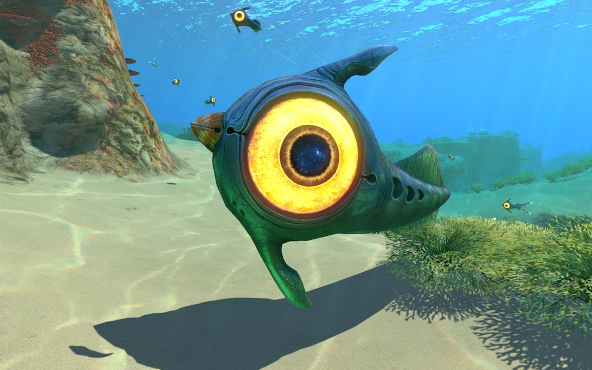

The Peeper is a small, yet fast, passive fauna species. It could be considered the mascot of Subnautica. It is easily identified by its large, bright yellow eyes. The Peeper will try to flee from most life forms larger than itself, such as Stalkers or the player. They can be caught, though their speed allows them to easily outrun a poorly equipped player.
Apperance
The Crabsquid's main body has two layers: a translucent, bulbous sac resembling a comb jellyfish's body, and a hard brown green body within, similar to that of a real life squid's mantle. The Crabsquid's head consists of four, large blue eyes with black pupils and an oddly shaped mandible below them. The Crabsquid's legs resemble those of a horseshoe crab, though tipped with small fins. Its ten limbs are brown-colored and smooth. The two shortest limbs near its mouth form a pair of comparably small pincers of which it uses to attack by raising its legs.
Behavior
The Crabsquid swims by continuously inflating and deflating its transparent membrane, allowing for sudden bursts of movement, however it can also walk around on the seabed using its two sets of four legs. Upon being approached, the creature will launch an attack, dealing 40 damage to the player. It can also be observed catching and eating smaller fauna, and attacking Warpers, they also attack other creatures. The Crabsquid is attracted to light and will follow certain light sources, meaning that it can be distracted using lights from the Cyclops, Seamoth, Prawn Suit, Seaglide, Flashlight or Flares. However, using a vehicle's light will usually end up with the Crabsquid disabling it.
Appearence
The Reaper Leviathan is a massive creature. Fins and mandibles included, the creature is just a little shorter than a Cyclops submarine. The Reaper Leviathan possesses a long, slim, muscular body with four caudal fins and two pectoral fins. It also has two dorsal fins running along the length of its entire body, and two ventral fins taking a small portion of its belly. Most of its fins, along with its back, are red in color. The fins and other red areas of the body possess slight bioluminescence.
Behavior
The Reaper Leviathan emits loud, echoing roars audible from great distances. According to the data bank entry, this roar is a form of echolocation, though it does not function like this in-game. It also seems to circle its prey (or more commonly the player) for some time before attacking and often strikes from behind by surprise.